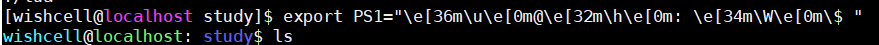

linux 命令一、 linux 切换 IP 后，快速恢复网络1、将常用命令保存在/readme中2、查看配置文件3、修改配置文件/etc/sysconfig/network-scripts/ifcfg-enp0s34、重启网络5、配置网卡上线6、 ping 通外网二、查看串口的命令1、linux 下怎样查看串口使用情况2、查看串口名称使用3、查看串口驱动，PC上的串口一般是ttyS，板子上Linux的串口一般叫做ttySAC三、查看端口占用，进程情况1、查看端口被哪个进程占用四、让程序在后台运行的方法1、setsid五、常用关机命令六、添加用户1、useradd2、编辑 smb.conf七、ftpget/ftpput用法八、 linux ls命令查看时间格式1、时间格式2、查找所有者为 root 的文件九、sshpass命令九一、scp命令COPY文件时，每次都要求输入密码九二、使用期sshpass 命令，直接在命令行上带用户名/密码十、文件压缩/解压十二、删除指定目录十三、漂亮的命令行提示符配置1、感性认识，可立即使用的效果2、原理，详细配置什么是PS1"\h、\u、\W"是什么鬼"\e[36m、\e[0m"又是什么鬼
/readme中x[wishcell@localhost ~]$[wishcell@localhost ~]$ cat /readmeifconfig enp0s3 192.168.43.222 netmask 255.255.255.0 upifconfig enp0s3 192.168.1.222 netmask 255.255.255.0 upvim /etc/resolv.confvim /etc/sysconfig/network-scripts/ifcfg-enp0s3service network restart[wishcell@localhost ~]$xxxxxxxxxx[wishcell@localhost ~]$ cat /etc/resolv.conf# Generated by NetworkManagernameserver 8.8.8.8nameserver 8.8.4.4[wishcell@localhost ~]$/etc/sysconfig/network-scripts/ifcfg-enp0s3xxxxxxxxxxvim /etc/sysconfig/network-scripts/ifcfg-enp0s3#PROXY_METHOD=none#BROWSER_ONLY=no#BOOTPROTO=dhcp#DEFROUTE=yes#IPV4_FAILURE_FATAL=no#IPV6INIT=yes#IPV6_AUTOCONF=yes#IPV6_DEFROUTE=yes#IPV6_FAILURE_FATAL=no#IPV6_ADDR_GEN_MODE=stable-privacy#NAME=enp0s3#UUID=021a3d3d-b514-4292-b6d2-115c44a53e2aTYPE=EthernetDEVICE=enp0s3ONBOOT=yesBOOTPROTO=static#IPADDR=192.168.43.222IPADDR=192.168.1.222NETMASK=255.255.255.0#NETWORK=192.168.43.0NETWORK=192.168.1.0#BROADCAST=192.168.43.255BROADCAST=192.168.1.255#GATEWAY=192.168.43.1GATEWAY=192.168.1.1DNS1=8.8.8.8DNS2=8.8.4.4xxxxxxxxxx[root@localhost wishcell]# service network restartRestarting network (via systemctl): [ OK ][root@localhost wishcell]# xxxxxxxxxx# ifconfig enp0s3 192.168.1.222 netmask 255.255.255.0 upxxxxxxxxxx[root@localhost wishcell]# ping www.baidu.com -c 3PING www.a.shifen.com (119.75.216.20) 56(84) bytes of data.64 bytes from 119.75.216.20 (119.75.216.20): icmp_seq=1 ttl=54 time=36.8 ms64 bytes from 119.75.216.20 (119.75.216.20): icmp_seq=2 ttl=54 time=50.5 ms64 bytes from 119.75.216.20 (119.75.216.20): icmp_seq=3 ttl=54 time=35.6 ms--- www.a.shifen.com ping statistics ---3 packets transmitted, 3 received, 0% packet loss, time 2330msrtt min/avg/max/mdev = 35.697/41.031/50.561/6.758 ms[root@localhost wishcell]#xxxxxxxxxx[WishCell@localhost root]$ dmesg | grep ttyS*console [tty0] enabledserial8250: ttyS0 at I/O 0x3f8 (irq = 4) is a 16550A00:05: ttyS0 at I/O 0x3f8 (irq = 4) is a 16550A0000:03:03.0: ttyS1 at I/O 0xe400 (irq = 21) is a 16550A0000:03:03.0: ttyS2 at I/O 0xe000 (irq = 21) is a 16550A[WishCell@localhost root]$xxxxxxxxxx一般情况下串口的名称全部在dev下面，如果你没有外插串口卡的话默认是dev下的ttyS*,一般ttyS0对应com1，ttyS1对应com2，当然也不一定是必然的；[WishCell@localhost root]$ ls -l /dev/ttyS*crw-rw----. 1 root dialout 4, 64 9月 26 09:22 /dev/ttyS0crw-rw----. 1 root dialout 4, 65 9月 26 09:22 /dev/ttyS1crw-rw----. 1 root dialout 4, 66 9月 26 09:23 /dev/ttyS2crw-rw----. 1 root dialout 4, 67 9月 25 07:26 /dev/ttyS3[WishCell@localhost root]$xxxxxxxxxx[root@localhost ~]# cat /proc/tty/driver/serialserinfo:1.0 driver revision:0: uart:16550A port:000003F8 irq:4 tx:59 rx:0 RTS|DTR1: uart:16550A port:0000E400 irq:21 tx:62 rx:0 RTS|DTR2: uart:16550A port:0000E000 irq:21 tx:57 rx:0 RTS|DTR3: uart:unknown port:000002E8 irq:3
xxxxxxxxxx[root@ unittest]#netstat -apn | grep 8080tcp 0 0 0.0.0.0:8080 0.0.0.0:* LISTEN 154123/./tt tcp 0 0 20.63.180.95:8080 10.63.180.91:51133 TIME_WAIT -tcp 0 0 20.63.180.95:8080 10.63.180.91:51130 TIME_WAIT -tcp 0 0 20.63.180.95:8080 10.63.180.91:51132 TIME_WAIT -tcp 0 0 20.63.180.95:8080 10.63.180.91:51129 TIME_WAIT -tcp 0 0 20.63.180.95:8080 10.63.180.91:51135 TIME_WAIT -tcp 0 0 20.63.180.95:8080 10.63.180.91:51131 TIME_WAIT -tcp 0 0 20.63.180.95:8080 10.63.180.91:51128 TIME_WAIT -tcp 0 0 20.63.180.95:8080 10.63.180.91:51136 TIME_WAIT -tcp 0 0 20.63.180.95:8080 10.63.180.91:51127 TIME_WAIT -tcp 0 0 20.63.180.95:8080 10.63.180.91:51134 TIME_WAIT -[root@ unittest]#pkill tt[root@ unittest]#netstat -apn | grep 8080[root@ unittest]#[root@ unittest]#netstat -apn | grep 80tcp 0 0 0.0.0.0:80 0.0.0.0:* LISTEN 3630/nginx: master tcp 0 0 10.63.180.95:22 10.63.180.93:1797 ESTABLISHED 129612/sshd: server
xxxxxxxxxx[root@localhost ngrok]# setsid ./bin/ngrokd -tlsKey="assets/server/tls/snakeoil.key" -tlsCrt="assets/server/tls/snakeoil.crt" -domain="myngrok" -httpAddr=":80" -httpsAddr=":8082" -tunnelAddr=":8083"xxxxxxxxxx1、shutdown 普通安全。 通知 init 进程，要求它改变运行级别。级别 0 关机。 级别6重启 # shutdown # shutdown now # shutdown 13:20 # shutdown -p now ### 关闭机器 # shutdown -H now ### 停止机器 # shutdown -r09:35 ### 在 09:35am 重启机器 2、halt 只是调用了 shutdown # halt ### 停止机器 # halt -p ### 关闭机器 # halt --reboot ### 重启机器3、poweroff 会发送一个 ACPI 信号来通知系统关机。 # poweroff ### 关闭机器 # poweroff --halt ### 停止机器 # poweroff --reboot ### 重启机器 4、reboot 命令 # reboot ### 重启机器 # reboot --halt ### 停止机器 # reboot -p ### 关闭机器
useraddxxxxxxxxxx# useradd -u 544 -d /home/testuser -g users -m testuser不满意可删除之：#userdel testuser为用户设置密码# passwd testuser然后为新用户添加 samba信息：
xxxxxxxxxx[root@ samba] smbpasswd -a testusersmb.confxxxxxxxxxx[global]dos charset = GB2312unix charset = GB2312display charset = GB2312directory mask = 0777force directory mode = 0777directory security mode = 0777force directory security mode = 0777create mask = 0777force create mode = 0777security mask = 0777force security mode = 0777workgroup = homedirnetbios = homedirserver string = linux samba serversecurity = userusername map = /etc/samba/smbusers[testuser] path = /home/testuser browseable = yes security = share writable = yes valid users= testuser create mode= 0777 force create mode = 0777 force directory mode = 0777# systemctl restart smb# setenforce 0# sudo systemctl stop firewalld.service && sudo systemctl disable firewalld.service查看smb启动状态# systemctl status smb.service
ftpget/ftpput用法xxxxxxxxxx# ftpget -v -u user -p pwd remote_ip ./local_file remote_file# ftpput -v -u user -p pwd remote_ip remote_name ./local_naelinux ls命令查看时间格式xxxxxxxxxx# ls -l --time-style=long-iso 得到的时间格式为2017-12-13 8:15其它的时间格式还有：iso，full-iso或者采用定制时间格式的方法：export TIME_STYLE='+%Y/%m/%d %H:%M:%S' 若要永久生效，须将此语句追加到 /etc/profile 之中
xxxxxxxxxxls -li -R | grep 'root root'[wishcell@localhost study]$ ls -li -R | grep 'root root'50352691 -rwxr-xr-x. 1 root root 16864 Feb 27 01:31 cpp_main50352685 -rw-r--r--. 1 root root 1760 Feb 27 01:30 cpp_main.o50352686 -rw-r--r--. 1 root root 2520 Feb 27 01:30 example.o50352673 -rw-r--r--. 1 root root 675 Feb 27 01:30 simple_cpp_interface.ali50352677 -rw-r--r--. 1 root root 1576 Feb 27 01:30 simple_cpp_interface.o
sshpass命令scp命令COPY文件时，每次都要求输入密码xxxxxxxxxxscp -r ./ root@192.168.1.223:/opt/xxxxxxxxxxsshpass -p pwd scp -r ./ root@192.168.1.223:/opt/
xxxxxxxxxxtar -zxvf xx.tar.gztar -jxvf xx.tar.bz2xz -d xx.tar.x2lzip -d xx.tar.lzunzip xx.zipunrar xx.rarmkdir -p /usr/lib/jvmtar -zxvf jfd1.8.0-31.tar.gz -C /usr/lib/jvmxxxxxxxxxx删除所有 .svn 目录：find -type d | grep .svn$ | xargs rm -r效果等同于find ./ -type d | grep .svn$ | xargs rm -r删除所有 .exe 文件： find ./ -name '*.exe' -type f -print -exec rm -rf {} ;命令执行详解：1、'./' 表示从当前目录开始递归查找2、"-name '*.exe'" 根据名称查找后缀名为 exe 的文件或者目录3、"-type f" 表示查找的类型为文件4、"-print" 输出查找到的文件名5、最主要的 "-exec" ，此选项后跟着一个所要执行的命令。 表示将 find 出来的内容执行此命令 -exec 后面跟的就是要执行的命令。然后一对 {}、一个空格和最后一个分号，中间要有空格xxxxxxxxxx只需要在 ~/.bash_profile 的最后加一行，命令行提示符就会变的漂亮起来：export PS1="\e[36m\u\e[0m@\e[32m\h\e[0m: \e[34m\W\e[0m\$ " 1 # .bash_profile 2 3 # Get the aliases and functions 4 if [ -f ~/.bashrc ]; then 5 . ~/.bashrc 6 fi 7 8 # User specific environment and startup programs 9 10 PATH=$PATH:$HOME/bin 11 12 export PATH 13 14 export PS1="\e[36m\u\e[0m@\e[32m\h\e[0m: \e[34m\W\e[0m\$ " xxxxxxxxxx保存退出，使文件生效[cofear@localhost ~]$ . .bash_profile最快速的更改变生效：上一行为生效前效果，下一行为立即生效的效果。

PS1是Linux用来设置命令提示符的环境变量
\u ：当前用户的账号名称
\H ：完整的主机名称
\h ：主机名
\w ：完整的工作目录名称
\W ：当前工作目录名称
\$ ：提示字符，root为# ，普通用户为$
其它
\d ：日期
\t ：显示时间为24小时格式
\T ：显示时间为12小时格式
\A ：显示时间为24小时格式
\e[36m 是ANSI控制码，又叫VT100系列控制码，用于在字符显示系统中控制光标移动和字符色彩等
ANSI控制码开始的标志都为ESC[，ESC对应ASCII码表的033(八进制)，\033来输入ESC，\033[36m即为ESC[36m
在Linux里\033[等同于\e[，故用\e[36m
颜色代码
| 背景色 | 字体色 |
|---|---|
| 40: 黑 | 30: 黑 |
| 41: 红 | 31: 红 |
| 42: 绿 | 32: 绿 |
| 43: 黄 | 33: 黄 |
| 44: 蓝 | 34: 蓝 |
| 45: 紫 | 35: 紫 |
| 46: 深绿 | 36: 深绿 |
| 47: 白色 | 37: 白色 |
ANSI控制码
| 控制码 | 说明 |
|---|---|
\033[30m -- \033[37m | 设置前景色 |
\033[40m -- \033[47m | 设置背景色 |
\033[0m | 关闭所有属性 |
\033[1m | 设置高亮度 |
\033[4m | 下划线 |
\033[5m | 闪烁 |
\033[7m | 反显 |
\033[8m | 消隐 |